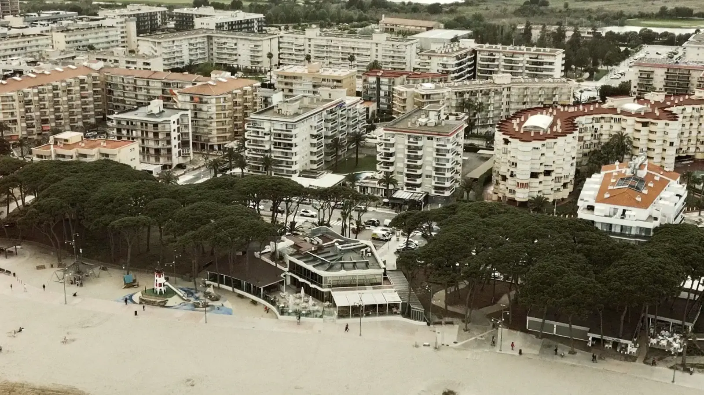
El Pòsit de la Pineda · Vila-seca
Previa · 8ª visita 2026
Medio siglo de cocina marinera, de la lonja de Cambrils a una antigua discoteca de La Pineda. Cerramos la temporada el 5 de noviembre.
Blog Gourmet
Las crónicas de nuestras cenas, los vinos del territorio y las historias del producto del Camp de Tarragona.

Previa · 8ª visita 2026
Medio siglo de cocina marinera, de la lonja de Cambrils a una antigua discoteca de La Pineda. Cerramos la temporada el 5 de noviembre.

Cèsar Martinell, discípulo de Gaudí
Las bautizó Àngel Guimerà. Las levantaron payeses que no tenían ni para el friso. Y las siete protegidas están aquí.
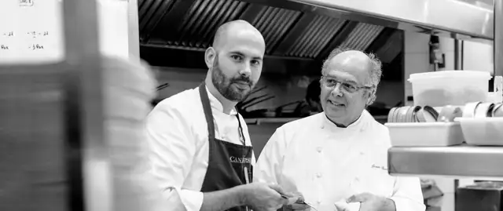
El mapa de la provincia
Dónde están, de quién son y por qué la capital no tiene ninguna. Más la que cierra en Salou y se marcha a Andorra.
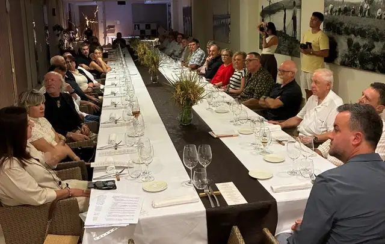
Qué es Gourmets de Tarragona
Cenando juntos desde 1998. Ocho restaurantes al año, ocho criterios de voto anónimo y una asociación que no vive de esto: lo hace por afición.

Previa · 8ª visita 2026
Medio siglo de cocina marinera, de la lonja de Cambrils a una antigua discoteca de La Pineda. Cerramos la temporada el 5 de noviembre.
Cèsar Martinell, discípulo de Gaudí
Las bautizó Àngel Guimerà. Las levantaron payeses que no tenían ni para el friso. Y las siete protegidas están aquí.
El mapa de la provincia
Dónde están, de quién son y por qué la capital no tiene ninguna. Más la que cierra en Salou y se marcha a Andorra.
Qué es Gourmets de Tarragona
Cenando juntos desde 1998. Ocho restaurantes al año, ocho criterios de voto anónimo y una asociación que no vive de esto: lo hace por afición.

Crónica · 7ª visita 2026
Treinta y dos comensales junto al muro del foro romano, el menú de Tymur Duka y un parlamento del presidente que acabó en Palencia.

Seis kilos y una navaja
El carnet de boletaire de Poblet, las 983 especies inventariadas y el parque natural de 38.900 hectáreas que está en camino.
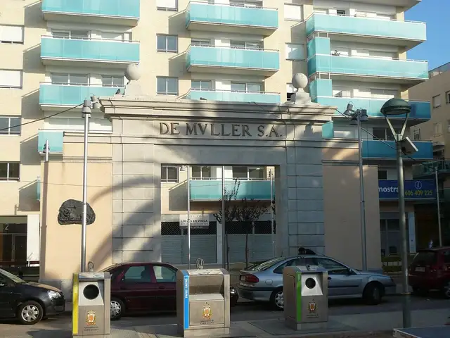
El vino de misa que llegó al Vaticano
Fundada en 1851 en el carrer Reial, proveedora oficial del Vaticano durante seis pontificados. Hoy exporta desde una masía de Reus.

La rifa que solo sobrevive en Reus
Un bombo con veinte bolas, bandejas de panellets y moscatel: la costumbre del siglo XIX que en toda Cataluña solo se mantiene aquí.

La subasta de las cuatro
Una lonja donde el precio baja en vez de subir, un barrio nacido porque el tren echó a los pescadores y una cocina hecha con lo que no se vendía.
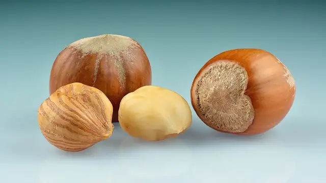
La lonja que aún le pone precio
Un mercado concedido en 1309, cinco variedades protegidas y una superficie que ha caído de 35.000 a menos de 8.000 hectáreas.
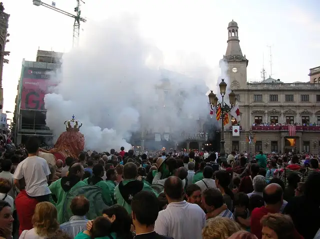
La bebida de Misericòrdia
Vermut negro y Plim a partes iguales, un nombre salido de los morteros de la Tronada y un pasacalles nacido en 2001.
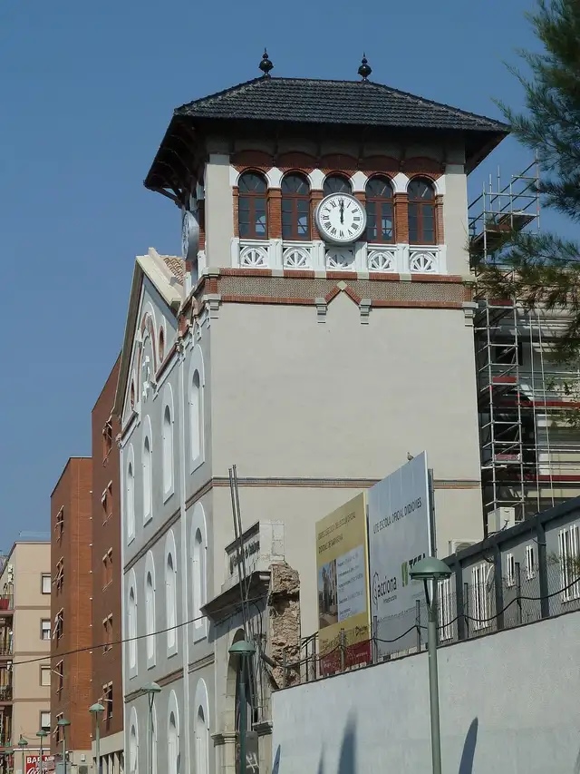
86 años destilando un secreto
Detrás de la mamadeta de Santa Tecla hay una fórmula de 1605 y unos monjes franceses que destilaron en el Barri del Port entre 1903 y 1989.
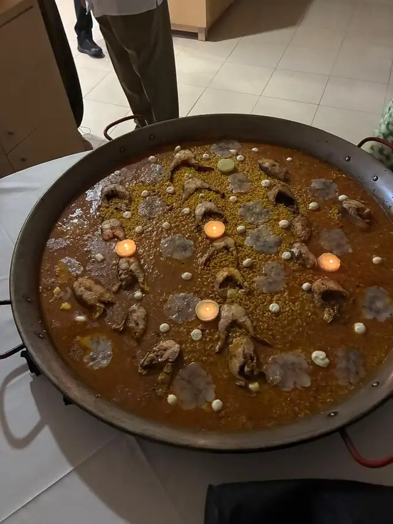
Crónica · 6ª visita 2026
Lluís Soler, alcalde de Deltebre, como ponente invitado, y un arròs amb llissa servido entre chispas.
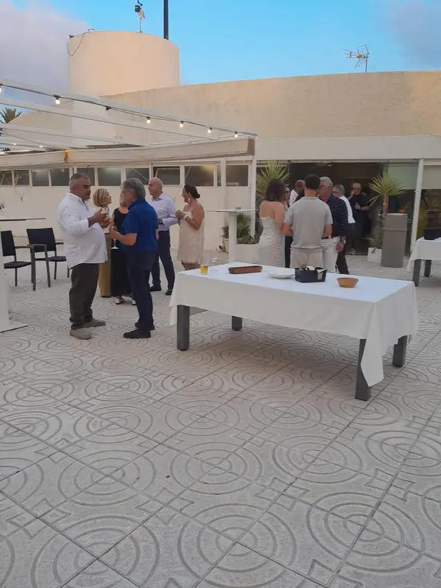
Club Nàutic de Salou
52 gourmets en una noche de verano frente al mar. Cóctel en la terraza del Nàutic, canelón de ternera con foie, pista de baile y la convicción de que esta asociación se construye cena a cena.

Crónica de la 5ª visita
Siete DOs catalanas, el arroz de lágrima ibérica y el grito de «¡Festival!» en la sala acristalada de Infinitum Resort frente al Mediterráneo.
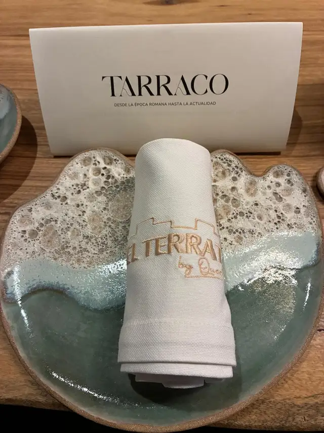
Balance de la Temporada 2026
Cuatro visitas, cuatro municipios, cuatro maneras distintas de entender la mesa. El ecuador del recorrido 2026.
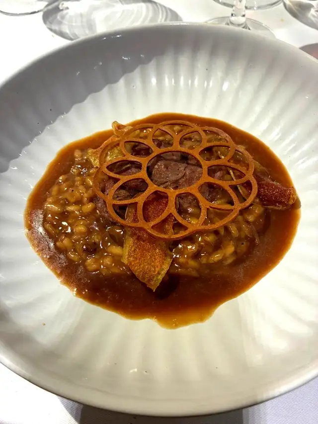
Crónica de la 4ª visita
Vermut de Reus, galera con amontillado y un arroz meloso que lo dijo todo. Crónica completa de la 4ª visita.
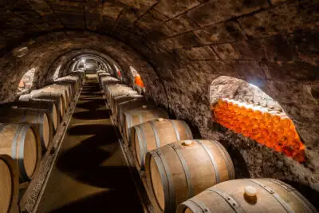
El vino de los reyes que nació de un accidente
La botrytis, los puttonyos y kilómetros de bodegas subterráneas. La historia del vino más legendario de Europa, que Vega Sicilia decidió hacer suyo en Hungría.
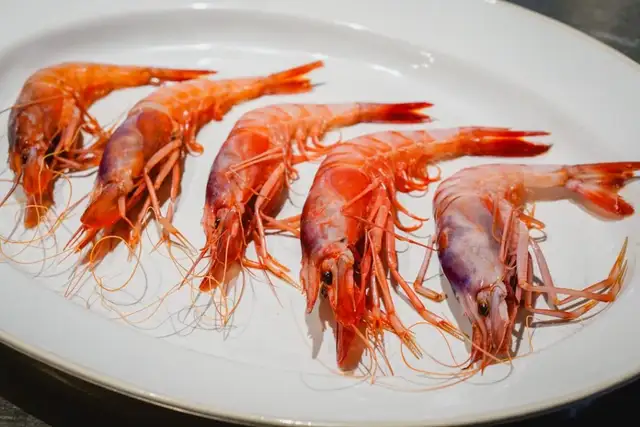
El gran producto del litoral
La misma especie que en Palamós o Dénia, pescada a 400 brazas en el Serrallo. Aquí la tienen desde siempre. Solo les faltaba contarlo bien.
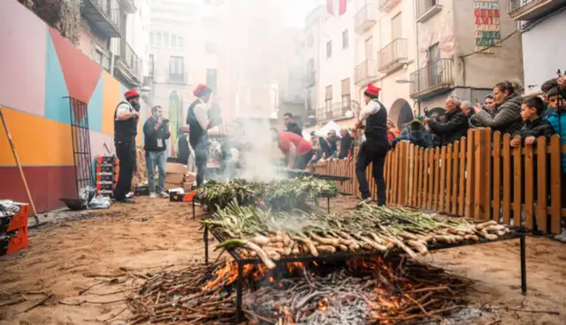
La cebolla que se convirtió en fiesta
El Xat de Benaiges, la salvitxada y 100 millones de calçots al año. La historia de una cebolla quemada que se convirtió en ritual gastronómico mundial.
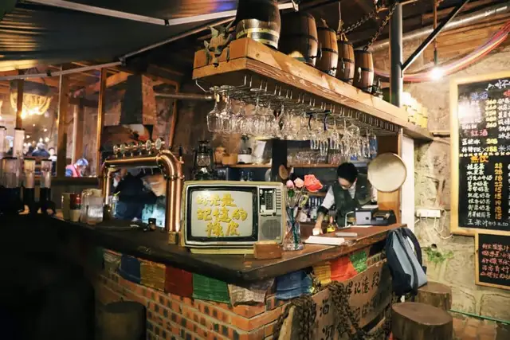
Cuando el cine tiene hambre
De Babette a Ratatouille, de Tampopo a The Bear. Diez películas donde la comida no es el tema: es el lenguaje.
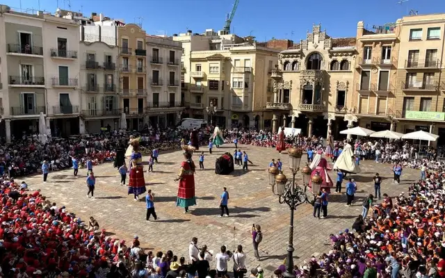
El dulce que Reus regala por Corpus
Un pesador de harina, unas cerezas a punto de perderse y un gesto generoso. Así nació la tradición más dulce del Camp de Tarragona.
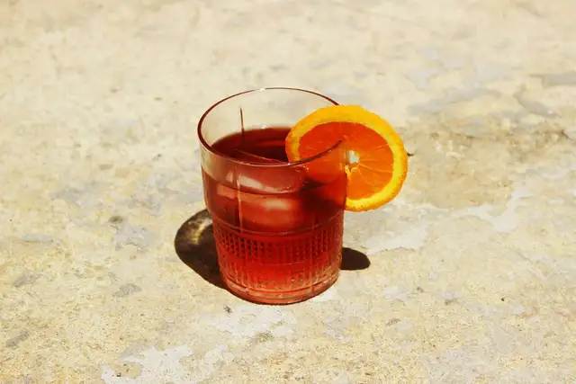
La capital mundial del vermut está en el Camp
Del aguardiente al aperitivo más elegante de Europa. Yzaguirre, Miró, Rofes... La historia de cómo Reus se convirtió en referencia mundial.
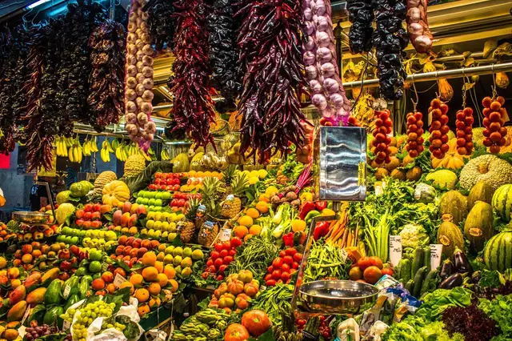
Lo que viene y lo que se va
La gastronomía de 2026 respira diferente. Menos ruido permanente, más conexión honesta con el territorio. Recuperación de técnicas ancestrales y sostenibilidad real.
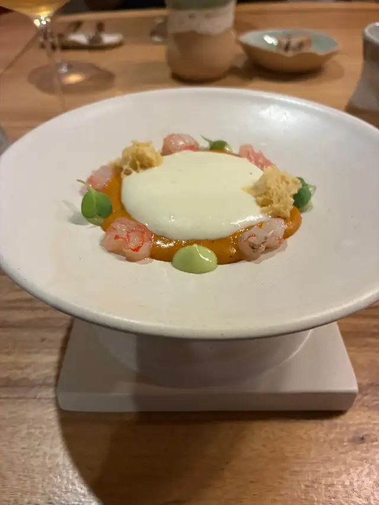
Crónica de la 3ª visita
Agua de rosas, briwat en dos pasos, romesco de gamba y tajine de cordero. Una noche sin ninguna grieta.
El taxista de Beverly Hills
Ceferino Carrión cruzó los Pirineos a pie y acabó sirviendo la última cena a Marilyn Monroe. Su legado: el primer Cabernet Sauvignon elaborado en España.
El origen de una revolución vinícola
Barbier, Glorian, Palacios, Pérez y Pastrana transformaron una comarca olvidada en una de las denominaciones más reconocidas del mundo.
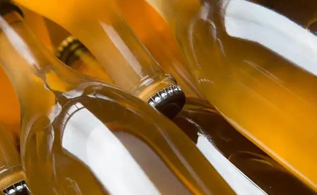
Método ancestral · Demarcación de Tarragona
La burbuja más antigua del mundo ha vuelto. Las bodegas de la demarcación que elaboran los pét-nats más territoriales de Cataluña.
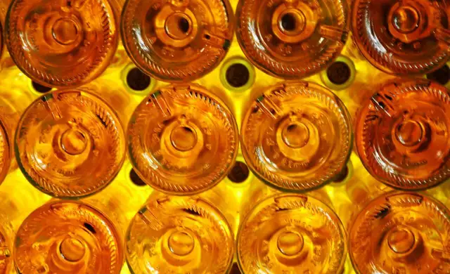
Vinos brisados · Demarcación de Tarragona
Una elaboración milenaria que el mundo acaba de descubrir. En la Terra Alta llevan siglos haciéndolo.
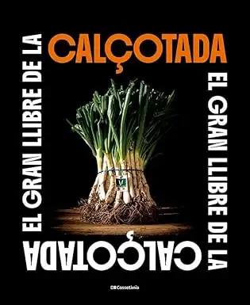
Selección Gourmet 2026
Nuestra selección de lecturas gastronómicas. Tres títulos de Cossetània Edicions y un autor de Reus: un recorrido literario con raíces en el Camp de Tarragona.
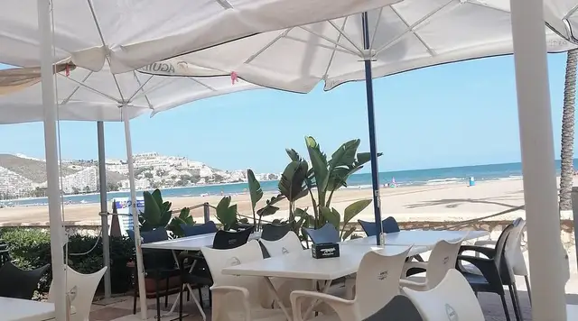
Crónica del 40 aniversario
Cuarenta años frente a la Platja dels Capellans. La constatación de que no siempre es necesario cambiar lo que funciona.
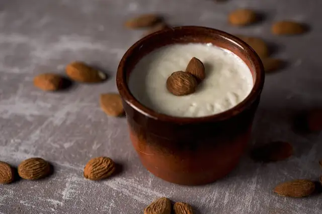
Menjablanc · Reus · Camp de Tarragona
Una crema de almendras con siglos de historia. Del Llibre de Sent Soví del siglo XIV a las confiterías de Reus.
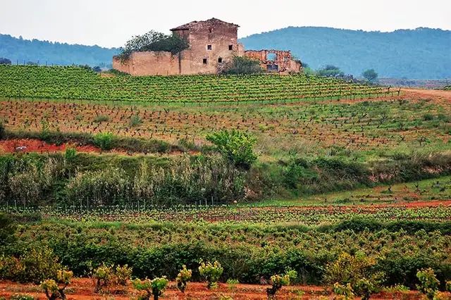
Territorio, historia y expresión
Ocho denominaciones, ocho territorios con voz propia. Una lectura por la historia, los suelos y las variedades del vino de Tarragona.
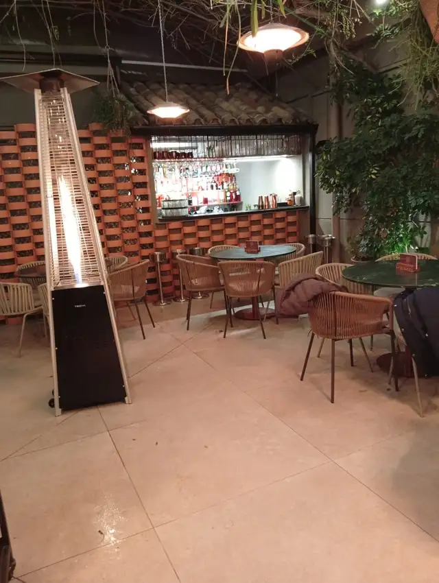
Crónica de la 1ª visita
Brasa, producto de calidad y coctelería diferencial. Crónica completa de la primera visita de la temporada 2026.
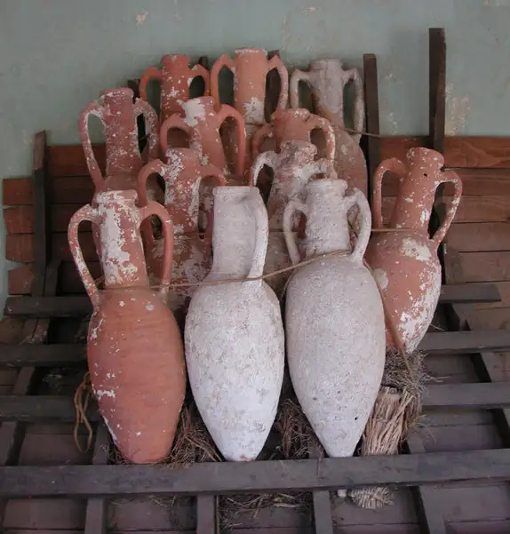
Salsa de Roma en el Camp
Pescado, sal, fermentación y tiempo. El condimento universal que Tarraco fabricaba y exportaba al mundo. Su herencia vive en las anchoas de tu nevera.
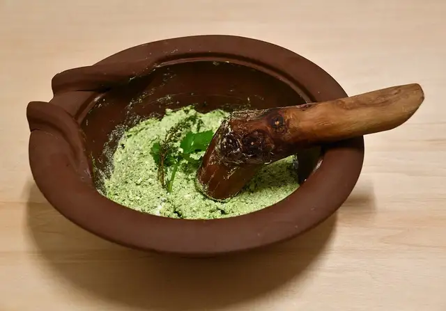
La pasta de hierbas de los romanos de Tarraco
Queso, ajo, hierbas y aceite. Dos mil años de historia y ya se comía en nuestra ciudad antes de que existiera el pesto.
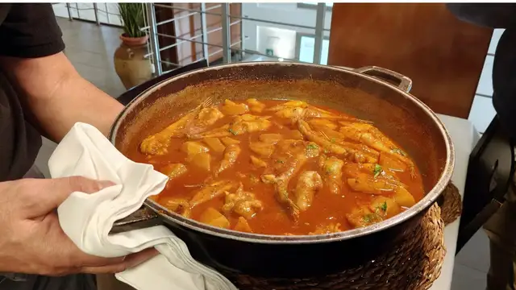
La salsa que nació en el Camp de Tarragona
Historia, origen y receta de la salsa que define la cocina del Camp — y la Gran Festa del Romesco, del 16 al 18 de octubre.
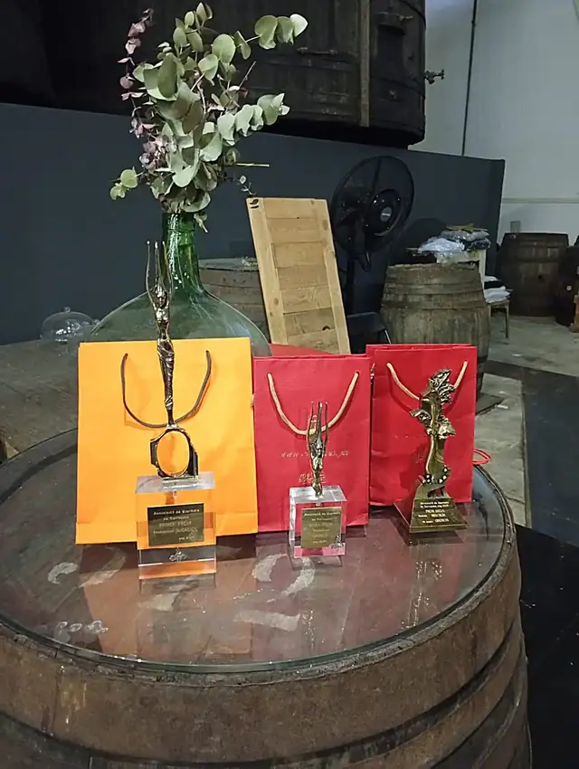
El nombre, el trofeo, el proceso de votación y el palmarés. Todo lo que hay que saber sobre el máximo reconocimiento de los Gourmets de Tarragona.
Vermuts Rofes · Reus
Buidasacs y Cambium, Trofeos Gastronia. Cirerets de Mas Alta, Premio Bacus. Una noche de reconocimiento en el Camp de Tarragona.
Prueba con otra palabra: un restaurante, un pueblo, un vino o un producto.
Newsletter
Sin calendario fijo: sale cuando hay algo que merece la pena contar.